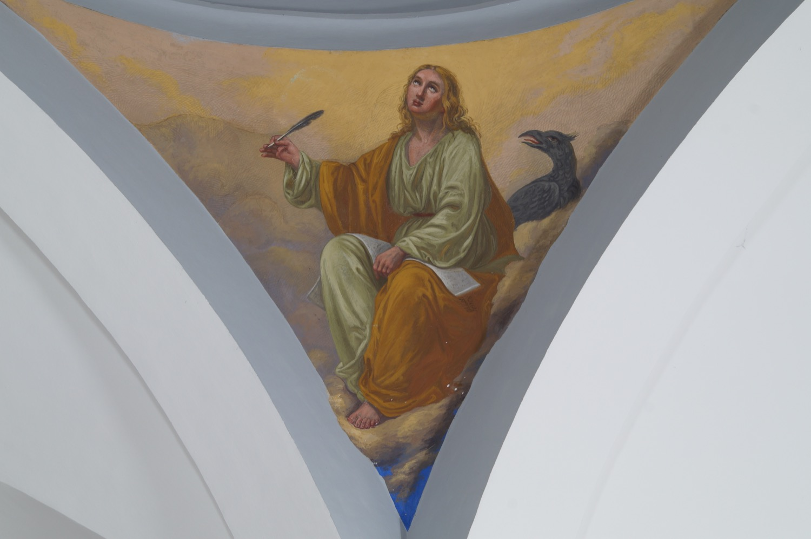

San Juan Evangelista fue el más joven de los doce apóstoles, hermano de Santiago el Mayor y autor de uno de los Evangelios y del Apocalipsis. Fue el discípulo más cercano a Jesús y el único presente al pie de la cruz, donde Jesús le encomendó que cuidara de la Virgen María, a quien acogió en su casa desde entonces.
En este fresco del año 1863, el pintor italo-mallorquín Francesc Parietti Rigo lo representó escribiendo un libro, lo que simboliza su papel como evangelista, y acompañado de un águila, que es su símbolo en el tetramorfos, la representación simbólica de los cuatro evangelistas. La identificación de san Juan con un águila se debe a que su Evangelio es el más abstracto y teológico de los cuatro y, por tanto, como un águila, se eleva por encima de los demás en sabiduría. Además, el águila es tradicionalmente el único animal que puede mirar directamente y sin deslumbrarse la luz del sol (símbolo de Dios y de su Palabra) y san Juan fue el evangelista que “miró” de forma más directa la luz divina.